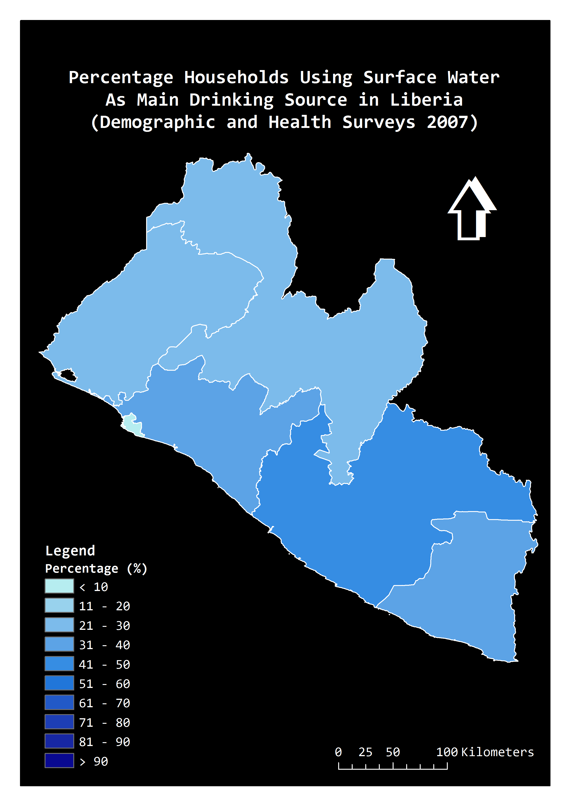

Sustainable Development Goal (SDG) 6
Ensure availability and sustainable management of water and sanitation for all
After the expiry of the United Nations’ Millennium DevelopmentGoals (MDGs) in 2015, the international focus on water and sanitation has shifted to a broader agenda through the SDG 6.
The ongoing development of indicators for enhanced monitoring of progress towards the SDG targets is likely to place greater demands on existing datasets.
Between MDG 7c and SDG 6, many more forms of data concerning drinking-water and sanitation have become available.
One such form of data is the spatial interpolation surfaces from USAID's Demographic and Health Surveys (DHS) Program,
which reports public health-related indicators such as water source (population living in households using an improved water source) and sanitation (population living in households using no toilet facility) in grid cell for least developed countries.
Ideas for #SDGinsights: Combining water point data and machine learning to predict the potential geographic distribution of specific type or group of drinking-water access/service
Complete spatial coverage
Water supply inventories such as water well database or water point mapping data have inherent spatial nature and allow data to be combined with any boundaries.
However, they often do not have complete spatial coverage across the country.
A predictive model can fill the gaps of spatial coverage and give an indication of the potential distribution of specific water supply service.


Fine spatial disaggregation
Data with high level of spatial disaggregation allows revealing hidden pattern and makes data easily to be combined with other scientific data by simply matching the geographic locations.
For example, some patterns such as spatial inequalities are often more pronounced in maps at finer levels of spatial disaggregation.
The following maps illustrate data concerning surface water drinking sources in Liberia by DHS region (left - DHS 2007), county (middle - Census 2008), and 5km x 5km grid square (right - MaxEnt prediction) respectively.


Specific type(s) or group(s) of water supply access/service
Surely, novel data like water point mapping datasets or DHS modelled surfaces are able to capture a variety of water supply sources;
and it is possible that geospatial data of specific water source such as DHS modelled surface of unimproved water or surface water coverage may become available in the future.
However, predictive modelling with water point sample is still a valuable practice,
as it allows to make prediction for any specific type or group of water supply access/service of interest
(e.g. standpipes which extract groundwater with genetic contaminations; only if the sample and predictive covariate data are available),
which may beyond the capacity of conventional datasets which only focus on standardised water supply techniques.
Achieving universal and equitable access to safe and affordable drinking water for all requires evidence-based assessments to identify the disadvantaged areas and prioritise those with the most needs accordingly.
To facilitate drinking water infrastructure development to deliver safe and sustainable water services for all,
it is necessary to locate the people still using disadvantaged water services across the country.
Surface water at the bottom of WHO/UNICEF Joint Monitoring Programme (JMP)’s water ladder refers to drinking water directly from open sources such as a river, stream, lake, dam, pond, canal or irrigation channel.
Fetching water from open sources may pick up contaminants and pathogens;
without proper treatment before use, it may cause serious health effects.
Although conventional geospatial datasets concerning drinking water services generally contain comparatively limited information on surface water sources,
more newly released datasets combining machine learning predictive modelling methods makes it possible to predict the potential spatial distribution of specific types of disadvantaged water service such as surface water.
|